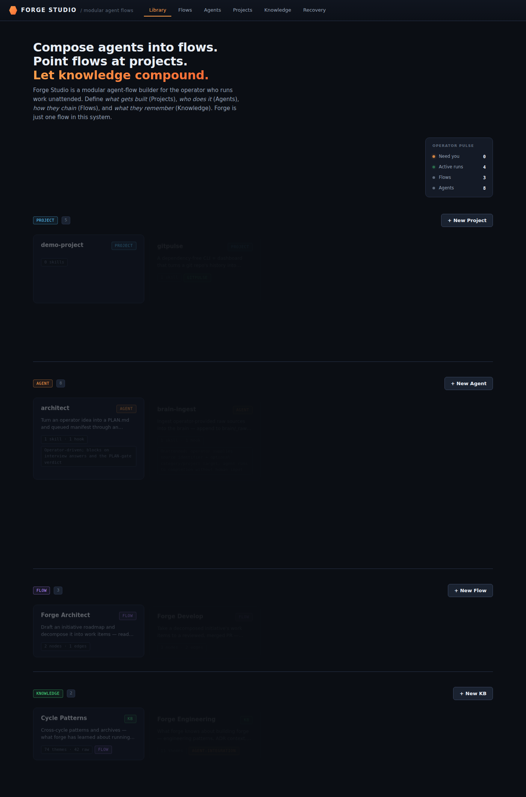
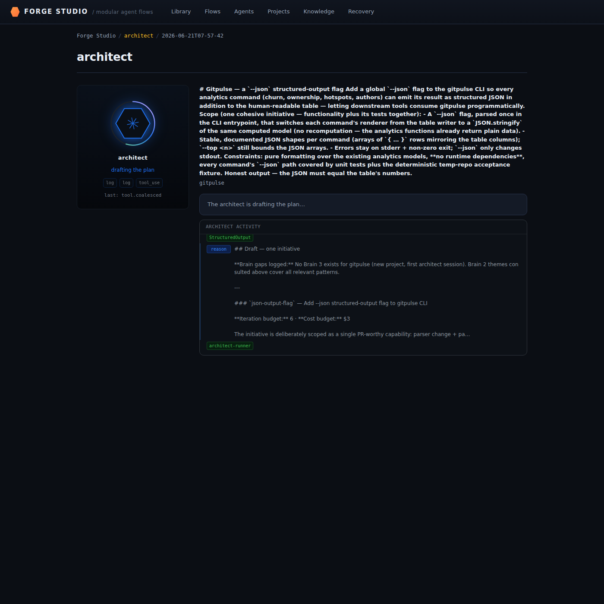
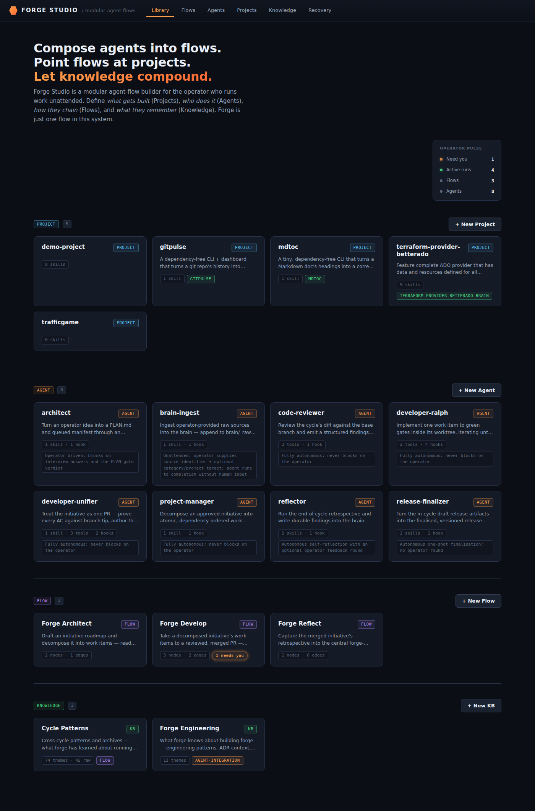
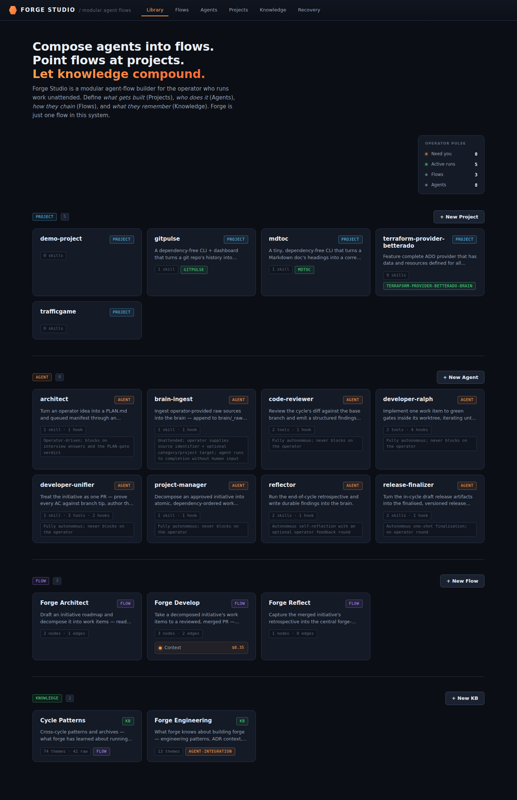

spine-gitpulse-json

01-initial-load.png
02-architect-awaiting-verdict.png03-plan-approved.png04-after-develop-ready-for-review.png
05-post-approve-events-352.png06-post-approve-events-361.png
07-final-state.png